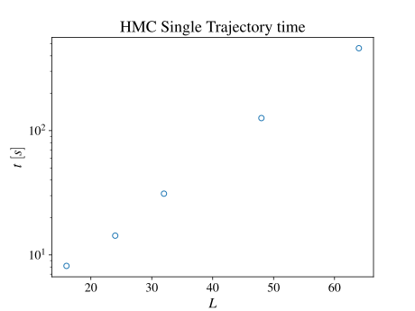

Here's a large table with all ensembles that are being generated on lassen. Apart from information about the launch parameters, are indicators for whether or not mesons/wflow measurements have been run and are ready for analyzing.
Click on any of the rows to be taken to a page with time-series plots of the ensembles.
Plotted below is the average time/trajectory as a function of volume. Note that the largest ensemble was run on 4 times as many nodes thus the measured time was multiplied by 4.
